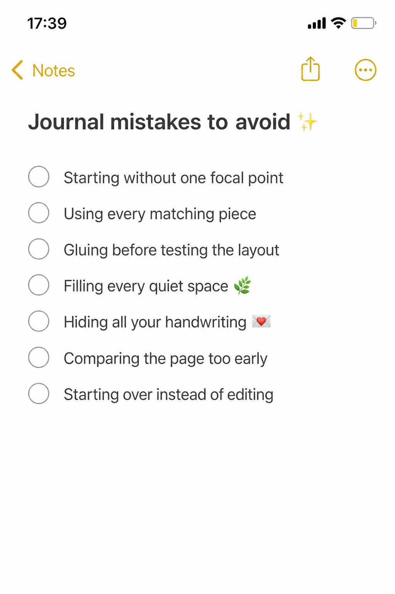
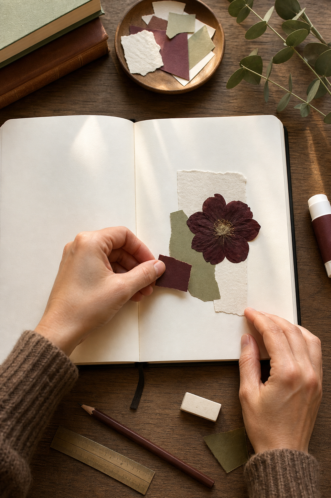
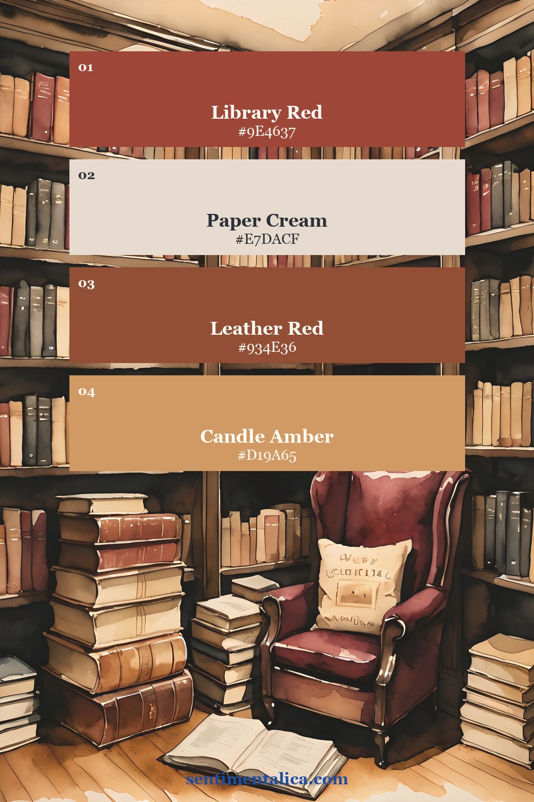
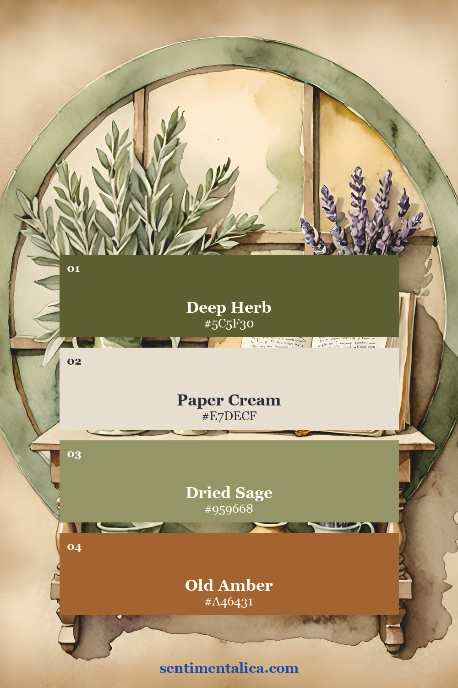
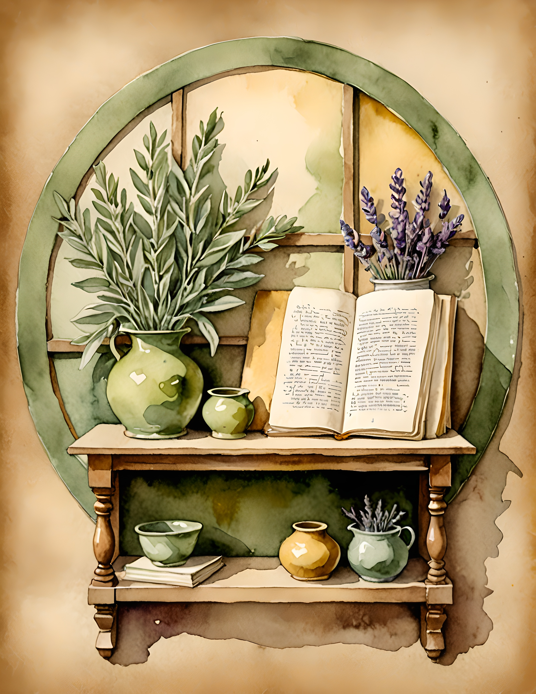

A page can feel wrong long before it is actually ruined. Often the problem is one extra piece, an unclear focal point, or glue applied before the composition had time to settle. Before you tear everything away, pause and diagnose what the page needs.

First check: does the page have one focal point?
Starting without a focal point makes every piece compete. Choose the image, photograph, phrase, or handwritten memory that matters most. Make it larger, darker, more detailed, or more isolated than the supporting pieces.
Then remove one matching item. Using every piece from a coordinated set can flatten the hierarchy because nothing feels special. Matching materials are options, not obligations.
Second check: did you glue before testing?
Build the layout loose first. Take a phone photo, walk away for ten minutes, and look again at the small screen. The reduced view makes imbalance easier to see. Move one piece at a time and compare each version with the photo.
Keep the glue capped until the main three relationships are settled: focal point to page edge, focal point to supporting piece, and decorated area to quiet area. If something is already attached, edit around it rather than assuming the whole page must go.

Third check: is every quiet space being filled?
Empty paper is not unfinished. It gives the eye somewhere to rest and leaves room for a date, sentence, or future addition. Cover one busy area with a plain scrap to test whether the page improves. If it does, you may need subtraction rather than decoration.
Try grouping several small pieces tightly instead of distributing them across the whole spread. A dense cluster plus one open area often feels more intentional than equal decoration in every corner.
Fourth check: did you hide the part only you can add?
Handwriting is not an interruption to the design. It is the evidence that the journal belongs to you. If a blank space feels intimidating, write on a separate slip first. Tuck it into a pocket, place it under a flap, or copy one sentence onto the page after you like the wording.
A page made only from beautiful materials can still feel distant. One date, ordinary detail, private joke, or imperfect line can give it emotional weight.
Last check: are you judging too early?
A half-built page often looks awkward. Wait until the glue is dry, remove the loose offcuts from the table, and view the page in daylight. Comparison also distorts judgment. A polished online page may have taken hours, used different materials, or been selected from many attempts.
If the page still feels off, name one problem in plain words: too dark, too busy, no focus, weak contrast, or not personal enough. Make one edit that answers that sentence. Starting over should be the last option, not the first reaction.
Use a limited palette when the theme feels unclear
These two palettes come from genuine Book Lover and Apothecary Leaf pages. The library palette is warm, red, and candlelit. The apothecary palette is herbal, cream, sage, and amber. Either can provide a firm starting boundary when too many materials are competing.


See two focused visual worlds
Book Lover holds together through old libraries, chairs, books, and candle warmth. Apothecary Leaf uses herbs, botanical shelves, lavender, and green shadow. These are real customer pages from the collections, shown as examples of strong visual direction rather than rules you must copy.

Before you start over, remove one piece, uncover one quiet area, and add one sentence only you could write. That is usually enough to turn a disappointing page back into your page. Continue with more calm journal guidance in the Sentimentalica journal.